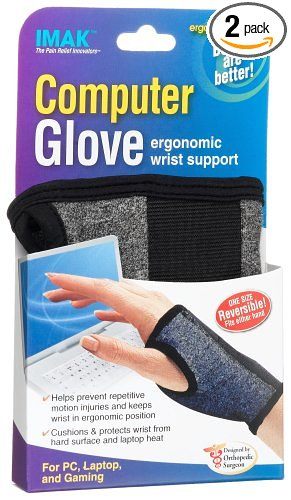

Suggestions to the Intelligent Newbie Web Developer
At a cafe today I met a barista, who just received a bachelor in mathematics and started web developing three weeks ago. Here is an opinionated list of things that as a web developer I use daily and like.
Don't get me wrong though because I would equally like both Mac and Linux if I were experienced with them and likewise many other languages and tools temp me daily. That said, here's what I like by virtue of my personal experience.
C# as a server-side language. It's open-source, object-oriented, popular, supports functional coding, and is alive and well.
Visual Studio Community as an Integrated Development Environment (IDE). It's free and powerful.
HTML, CSS, and JavaScript - they are the web. I like jQuery, Bootstrap, and Angular JS (kind of) as libraries and frameworks, and the LESSCSS and Typescript as pre-processors.
Linted code!!! I lint my JavaScript, for instance, with jsLint.
HTML5 specification for developers is the reference that I use for HTML.
Git and the Git Book.
Atom and Vim as text editors.
StackOverflow I both ask questions and nswer questions.
Since I use Windows, ConEmu is my command line manager and PowerShell is where I live.
The Surface Pro 3 i5 with 120 GB is my current development machine.
I wear Imak Typing Gloves because the prevent wrist pain and because I feel bad-ass while wearing them (available on Amazon).

That's all I've got for now. And seriously, I love my typing gloves.